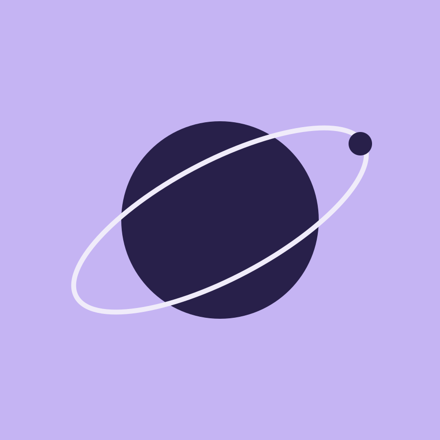
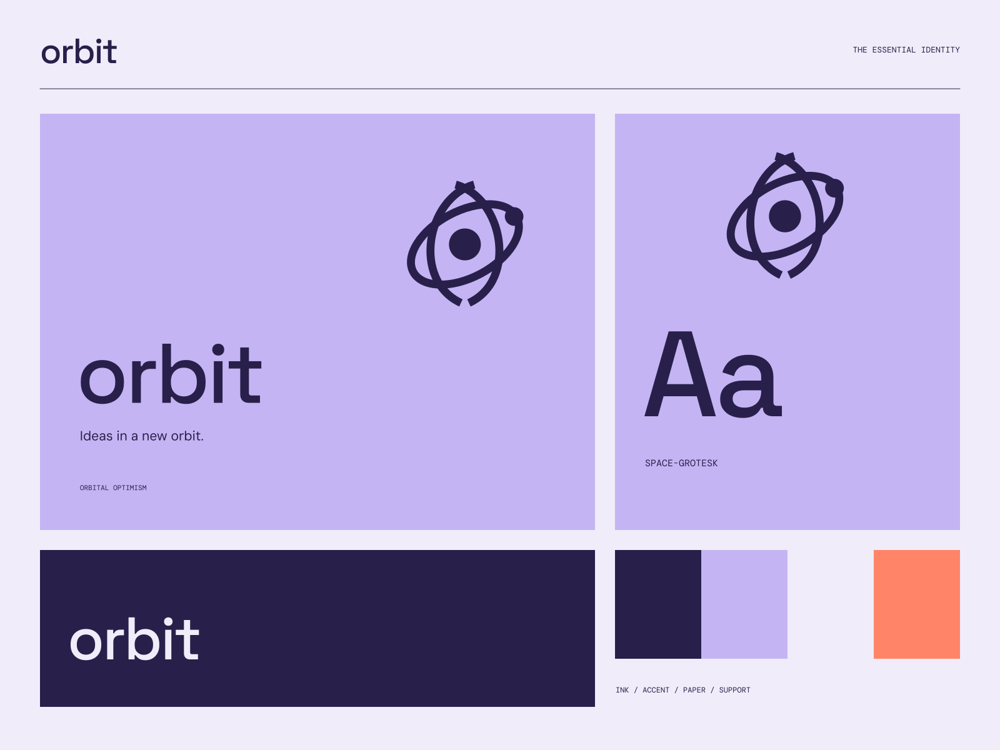

01
Make space
Collect the fragments that could become your next great idea.
A WORKSPACE FOR WHAT COMES NEXT
Ideas in a new orbit. One idea. Many possibilities.

A coherent little world
One idea. Many possibilities. Ideas in a new orbit.
01
Collect the fragments that could become your next great idea.
02
Bring your thinking together in a workspace that stays open.
03
Good ideas get better when they have somewhere to meet.

The point of view
Luminous orbital objects and precise flight-path diagrams meet a playful digital interface. Rounded controls live inside disciplined, spacious technical frames.